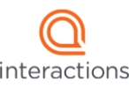
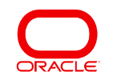

Qualified Independent Contractor

Our Experience Runs Deep
10
million appeals processed
38
years as an appeals contractor
79
experts in 79 types/categories of appeals
What Maximus Can Do For You
Maximus is a Qualified Independent Contractor (QIC) for Medicare. For information on how to file a reconsideration, please visit each jurisdiction.
The Centers for Medicare & Medicaid Services (CMS), selected Maximus as the Part A and DME Qualified Independent Contractor (QIC) for second-level independent external reviews of Medicare fee-for-service healthcare denials.
Our QIC Appeals Portal Makes Filing Easy
Maximus offers a 24-hour secure, CMS-compliant web portal for electronic submission of appeal requests. Many Provider/Supplier organizations and health plans are currently using the QIC Appeals Portal, and Providers/Suppliers or plans who are interested can begin using it immediately.
Please see the link below to the QIC Appeals Portal website. When visiting the QIC Portal website, you will find detailed instructions on how to register with the QIC Appeals Portal and submit case files to Maximus.
QIC Appeals Portal (opens in new tab)Some of the benefits of the Maximus QIC Appeals Portal are:
Secure login and submission
(permits providers/suppliers to securely transmit appeals and supporting documents)
Immediate confirmation of submission
(including a confirmation number)
Ability to upload and submit files electronically
(eliminating mailing and shipping costs)
Online appeal request submission forms
(eliminating paper forms)
Who is Maximus?
Since 1975, Maximus has operated under its founding mission of Helping Government Serve the People®, enabling citizens around the globe to successfully engage with their governments at all levels and across a variety of health and human services programs. Maximus delivers innovative business process management and technology solutions that contribute to improved outcomes for citizens and higher levels of productivity, accuracy, accountability, and efficiency of government-sponsored programs. With more than 35,000 employees worldwide, Maximus is a proud partner to government agencies in the United States, Australia, Canada, Italy, Saudi Arabia, Singapore, South Korea, Sweden, and the United Kingdom. For more information, visit maximus.com.
Maximus is a group of experts on appeals. Medicare hired Maximus to look at denied appeals and decide if the health plan made the right decision and to perform reconsiderations of appealed Part A and DME redeterminations (first-level appeal decisions) made by a Medicare Administrative Contractor. Maximus works for Medicare. Maximus does not work for the Medicare health plans. Our job is to conduct fair and independent reviews.
Our full-time employees include physicians, attorneys, nurses, therapists, public health experts, and certified coders. We are also supported by a large and distinguished panel of physicians and practitioner consultants in every medical specialty area.
Strategic Alliance Partners

